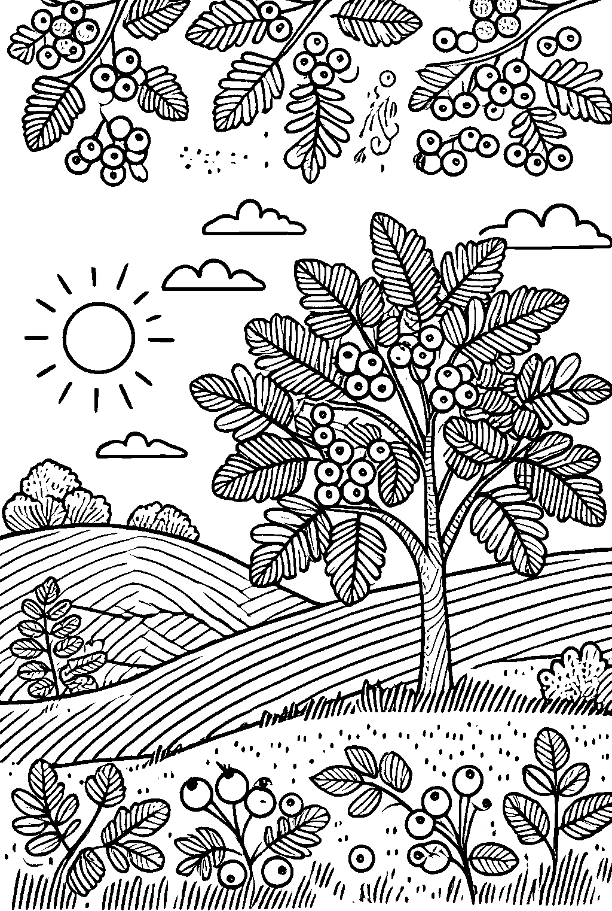
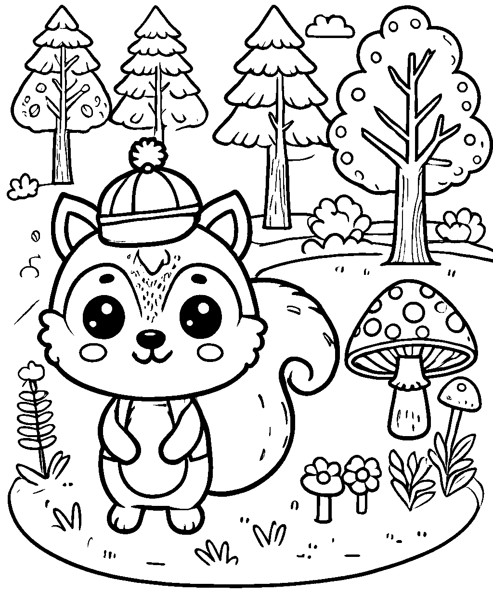
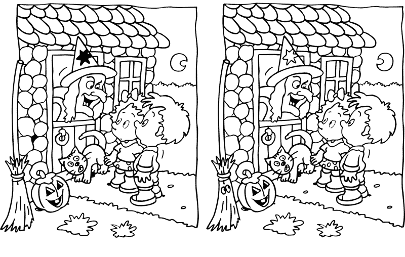

Kid's Zone!
Looking for coloring pages, games and other forest activities for rainy days? Leaf through our collection! Remember to ask your parents before you print a page. Wasting paper and ink is bad for the forest.
Coloring pages

Try to color within the lines! Look for the right colors in the forest! Can you name the tree?

Spruce the fox is looking out for you! He's warning you for the Amanita muscaria. You can recognise it by its white dotted red cap. This mushroom can be found in the Autumn and its poisonous! Do not touch it, just color it instead!

Can you find the six differences between the two images? When you are done, you can color this page in too! And remember, don't follow a witch into her house, she might eat you!